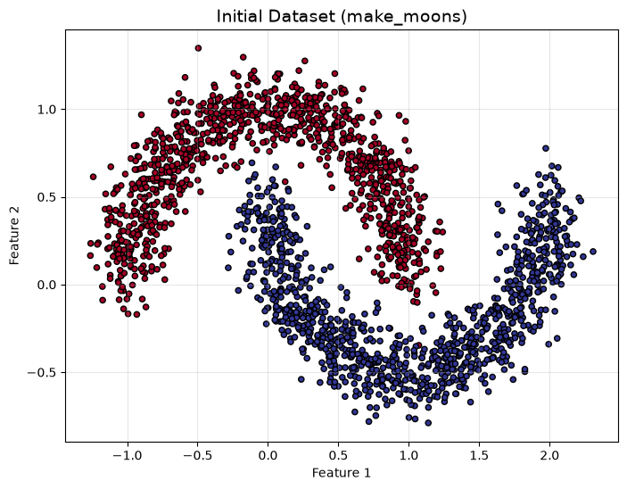
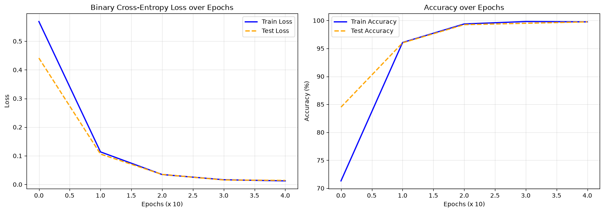
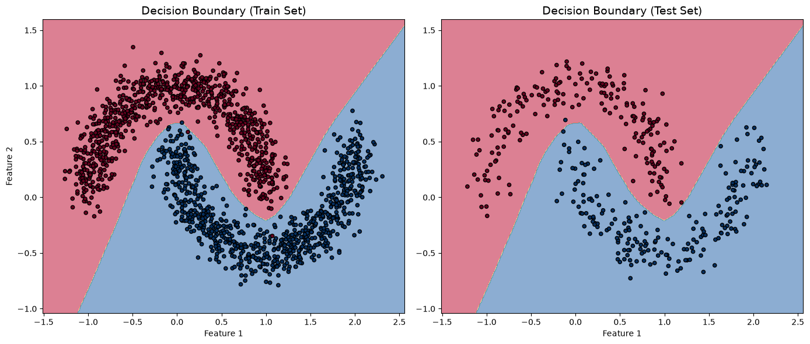

import ml_framework as ml
from matplotlib import pyplot as plt
from sklearn.model_selection import train_test_split
from sklearn.datasets import make_moons
import numpy as np
# General Configuration
N_SAMPLES = 2000
RANDOM_SEED = 42
NOISE = 0.12
IN_FEATURES = 2
OUT_FEATURES = 1
LEARNING_RATE = 0.001
TEST_SIZE = 0.2
rng = np.random.default_rng(seed=RANDOM_SEED)Binary Classification of Non-Linear Data (Moons)
This notebook demonstrates the capabilities of the ml-engine-from-scratch framework on a classic non-linear problem: the Moons dataset.
Unlike linearly separable blobs, the intertwined shapes of this dataset require a deep neural network capable of learning highly non-linear decision boundaries. We will build a Multi-Layer Perceptron (MLP), train it using our custom Adam optimizer and BinaryCrossEntropyLoss, and visualize the results.
1. Data Generation and Preparation
We use scikit-learn’s make_moons function to generate 2,000 data points forming two interleaving half-circles. We add a bit of statistical noise to make the classification task more realistic and challenging.
# Generate the data
x_data, y_data = make_moons(n_samples=N_SAMPLES, shuffle=True, noise=NOISE, random_state=RANDOM_SEED)
y_data = y_data.reshape(-1, 1)
# Initial Visualization of the Raw Data
plt.figure(figsize=(8, 6))
plt.title("Initial Dataset (make_moons)", fontsize=14)
plt.scatter(x_data[:, 0], x_data[:, 1], c=y_data.flatten(), s=20, cmap=plt.cm.RdYlBu, edgecolors='k')
plt.xlabel("Feature 1")
plt.ylabel("Feature 2")
plt.grid(alpha=0.3)
plt.show()
# Train / Test split
X_train, X_test, y_train, y_test = train_test_split(x_data, y_data, test_size=TEST_SIZE, random_state=RANDOM_SEED)
print(f"Training features shape: {X_train.shape}")
print(f"Training labels shape: {y_train.shape}")
print(f"Testing features shape: {X_test.shape}")
Training features shape: (1600, 2)
Training labels shape: (1600, 1)
Testing features shape: (400, 2)2. Neural Network Architecture
We build an MLP with two hidden layers.
Engineering Note: Unlike the linearly separable make_blobs dataset, the make_moons dataset is highly non-linear. If we were to omit the ReLU activation functions here, the network would mathematically collapse into a single linear transformation, making it completely impossible to separate the two moons. The ReLU layers are strictly mandatory here to give the network its non-linear expressive power.
hidden_size1 = 32
hidden_size2 = 32
# Create the model using our Sequential API
model = ml.Sequential([
ml.LinearLayer(in_features=IN_FEATURES, out_features=hidden_size1, rng=rng),
ml.ActivationLayer(func=ml.ReLU, derivative=ml.ReLUDerivative),
ml.LinearLayer(in_features=hidden_size1, out_features=hidden_size2, rng=rng),
ml.ActivationLayer(func=ml.ReLU, derivative=ml.ReLUDerivative),
ml.LinearLayer(in_features=hidden_size2, out_features=OUT_FEATURES, rng=rng)
])
print("Model Architecture Initialized:")
print(model)
# Create the loss function and optimizer
loss_fn = ml.BinaryCrossEntropyLoss()
optimizer = ml.Adam(learning_rate=LEARNING_RATE)Model Architecture Initialized:
Sequential(
(0): LinearLayer(in_features=2, out_features=32, bias=True)
(1): ActivationLayer(func=ReLU)
(2): LinearLayer(in_features=32, out_features=32, bias=True)
(3): ActivationLayer(func=ReLU)
(4): LinearLayer(in_features=32, out_features=1, bias=True)
)3. Model Training
We train the model over 40 epochs using mini-batches. During the forward pass, the model outputs raw logits. To compute the training and testing accuracy, we pass these logits through a Sigmoid function and round the result to get discrete class predictions (0 or 1).
EPOCHS = 40
TEST_FREQ = 10
BATCH_SIZE = 32
train_loss_history, test_loss_history = [], []
train_accuracy_history, test_accuracy_history = [], []
for epoch in range(EPOCHS):
model.train()
# Batch creation and Shuffling
indices = np.arange(0, X_train.shape[0])
rng.shuffle(indices)
avg_train_loss = 0
avg_train_accuracy = 0
for start_idx in range(0, X_train.shape[0], BATCH_SIZE):
X_train_batch = X_train[indices[start_idx:start_idx+BATCH_SIZE]]
y_train_batch = y_train[indices[start_idx:start_idx+BATCH_SIZE]]
# Forward pass
y_logits = model(X_train_batch)
y_pred = np.round(ml.Sigmoid(y_logits))
# Compute the loss and accuracy
avg_train_loss += loss_fn(logits=y_logits, y_expected=y_train_batch)
avg_train_accuracy += (np.sum(y_train_batch == y_pred) / BATCH_SIZE) * 100
# Backpropagation
model.backward(loss_fn.backward())
# Optimizer step
optimizer.step(model)
n_batchs = int(len(X_train) / BATCH_SIZE)
avg_train_loss /= n_batchs
avg_train_accuracy /= n_batchs
# Evaluation phase
if epoch % TEST_FREQ == 0 or epoch == EPOCHS-1 or epoch == 0:
model.eval()
test_logits = model(X_test)
test_loss = loss_fn(logits=test_logits, y_expected=y_test)
y_test_pred = np.round(ml.Sigmoid(test_logits))
test_accuracy = (np.sum(y_test == y_test_pred) / y_test.shape[0]) * 100
train_loss_history.append(avg_train_loss)
test_loss_history.append(test_loss)
train_accuracy_history.append(avg_train_accuracy)
test_accuracy_history.append(test_accuracy)
print(f"Epoch {epoch:02d} | Train Loss: {avg_train_loss:.4f} | Train Acc: {avg_train_accuracy:.2f}% | Test Loss: {test_loss:.4f} | Test Acc: {test_accuracy:.2f}%")Epoch 00 | Train Loss: 0.5687 | Train Acc: 71.31% | Test Loss: 0.4411 | Test Acc: 84.50%
Epoch 10 | Train Loss: 0.1137 | Train Acc: 96.06% | Test Loss: 0.1061 | Test Acc: 96.00%
Epoch 20 | Train Loss: 0.0347 | Train Acc: 99.38% | Test Loss: 0.0349 | Test Acc: 99.25%
Epoch 30 | Train Loss: 0.0164 | Train Acc: 99.81% | Test Loss: 0.0157 | Test Acc: 99.50%
Epoch 39 | Train Loss: 0.0124 | Train Acc: 99.75% | Test Loss: 0.0140 | Test Acc: 99.75%4. Learning Curves: Loss and Accuracy
Visualizing the training metrics is critical to confirm that our custom backpropagation and optimizer are working smoothly, and to monitor for any signs of overfitting.
# Create a figure with two side-by-side subplots
plt.figure(figsize=(14, 5))
# Plot 1: Loss over Epochs
plt.subplot(1, 2, 1)
plt.plot(train_loss_history, label='Train Loss', color='blue', linewidth=2)
plt.plot(test_loss_history, label='Test Loss', color='orange', linewidth=2, linestyle='--')
plt.title('Binary Cross-Entropy Loss over Epochs', fontsize=12)
plt.xlabel(f'Epochs (x {TEST_FREQ})', fontsize=10)
plt.ylabel('Loss', fontsize=10)
plt.legend()
plt.grid(alpha=0.3)
# Plot 2: Accuracy over Epochs
plt.subplot(1, 2, 2)
plt.plot(train_accuracy_history, label='Train Accuracy', color='blue', linewidth=2)
plt.plot(test_accuracy_history, label='Test Accuracy', color='orange', linewidth=2, linestyle='--')
plt.title('Accuracy over Epochs', fontsize=12)
plt.xlabel(f'Epochs (x {TEST_FREQ})', fontsize=10)
plt.ylabel('Accuracy (%)', fontsize=10)
plt.legend()
plt.grid(alpha=0.3)
plt.tight_layout()
plt.show()
5. Decision Boundary Visualization
Finally, we generate a 2D mesh grid to visualize exactly how the neural network has warped space to separate the two intertwined moons. We plot this for both the training and testing sets side-by-side.
# Let's plot the decision boundary!
X = np.linspace(x_data[:,0].min() - 0.25, x_data[:,0].max() + 0.25, 500).reshape(-1,1)
Y = np.linspace(x_data[:,1].min() - 0.25, x_data[:,1].max() + 0.25, 500).reshape(-1,1)
xx, yy = np.meshgrid(X, Y)
grid_points = np.c_[xx.ravel(), yy.ravel()]
model.eval()
grid_logits = model(grid_points)
grid_pred = np.round(ml.Sigmoid(grid_logits))
plt.figure(figsize=(14, 6))
# Subplot 1: Train Set
plt.subplot(1, 2, 1)
plt.contourf(xx, yy, grid_pred.reshape(xx.shape), cmap=plt.cm.Spectral, alpha=0.6)
plt.scatter(x=X_train[:,0], y=X_train[:,1], c=y_train.flatten(), s=20, cmap=plt.cm.RdBu, edgecolors='k')
plt.title("Decision Boundary (Train Set)", fontsize=14)
plt.xlabel("Feature 1")
plt.ylabel("Feature 2")
# Subplot 2: Test Set
plt.subplot(1, 2, 2)
plt.contourf(xx, yy, grid_pred.reshape(xx.shape), cmap=plt.cm.Spectral, alpha=0.6)
plt.scatter(x=X_test[:,0], y=X_test[:,1], c=y_test.flatten(), s=20, cmap=plt.cm.RdBu, edgecolors='k')
plt.title("Decision Boundary (Test Set)", fontsize=14)
plt.xlabel("Feature 1")
plt.tight_layout()
plt.show()
6. Conclusion
The network successfully solved the non-linear classification problem, curving its decision boundary perfectly through the gap between the two moons.
This notebook proves the mathematical completeness of our ml-engine-from-scratch framework: 1. The ReLU layers correctly broke the linearity, enabling complex feature representation. 2. The BinaryCrossEntropyLoss and internal backpropagation engine reliably propagated gradients through multiple layers. 3. The Adam optimizer converged smoothly without getting trapped in local minima, as evidenced by the stable learning curves.